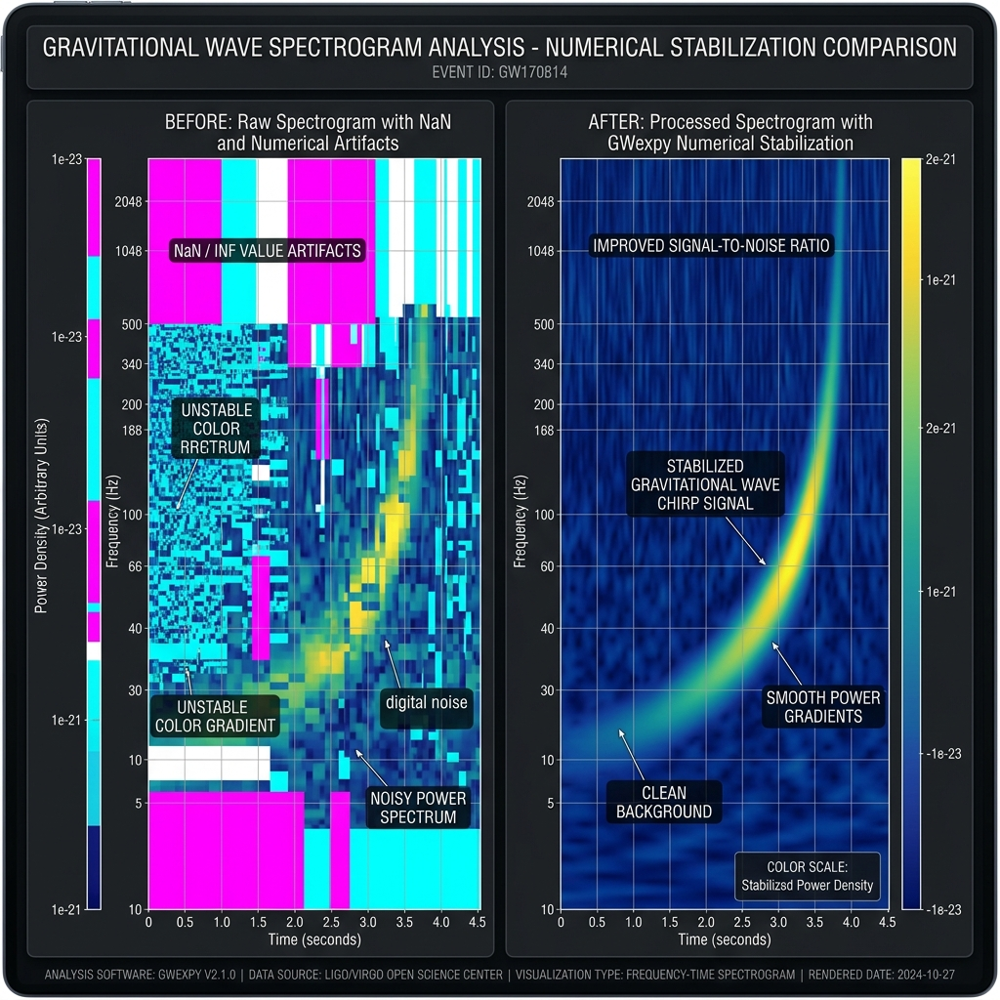

Numerical Stability and Precision
Page role: Guide
Note
Who should read this page?
Standard analysis in gwexpy works out-of-the-box with high stability. Refer to this detailed guide only if:
You see “holes” or “unusual colors” in your plots caused by
NaNorInf.You are working with extremely small signals (below \(10^{-23}\)) or huge signals (above 1) simultaneously.
You want to deeply understand the numerical behavior of algorithms and tune parameters like
epsortol.
gwexpy is designed to handle data with an extremely wide dynamic range without numerical breakdown.
Search hints: numerical stability, NaN, Inf, whiten, eps, safe log, tol
At a Glance
Item |
Details |
|---|---|
Page Role |
Guide |
Audience |
Users seeing |
Prerequisites |
Basic familiarity with FFTs, ASD/PSD plots, and whitening |
Use Cases |
Diagnose broken plots, understand when to tune |
Search Keywords |
numerical stability, |
On This Page
TL;DR
Impact of Stabilization (Before & After)
TL;DR
For normal analysis, start by trusting the default
gwexpysettings.Do not add manual offsets such as
+ 1e-20before plotting unless you have a concrete reason.Tune parameters only when you actually observe
NaN/Inf, work with extreme amplitudes, or need algorithm-level validation.
Impact of Stabilization (Before & After)
A comparison between standard methods (simple log10 or fixed eps) and gwexpy’s robust numerical stabilization algorithms.

Item |
Standard path |
GWexpy path |
|---|---|---|
Zero Values |
|
Safe Log automatically sets an optimal floor based on the max value |
Micro-signals |
Rounded to zero by fixed |
Adaptive Whitening ( |
Failures |
|
Pre/Post-computation validation protects data integrity |
Core Stabilization Methods and APIs
Method |
Target API |
Issues Resolved |
Configuration Hint |
|---|---|---|---|
Adaptive Whitening |
|
Zero-division / Signal loss |
|
Safe Log |
|
|
Adjustable via |
Internal Standardization |
|
Non-convergence |
Works regardless of input amplitude |
Relative Tolerance |
Various |
Early termination |
Auto-scales |
Detailed Explanations and Examples
1. Adaptive Whitening
Goal: Avoid signal loss caused by a fixed eps.
Input: A TimeSeries containing very small amplitudes.
Output: A whitened series with automatic scaling.
Standard whitening often uses a fixed normalization parameter (eps) to prevent division by zero. If this value is too large, micro-signals are lost.
❌ Bad Example: Fixed eps causing signal loss
# A fixed eps of 1e-12 rounds a 1e-21 signal to zero
whitened = data / (asd + 1e-12)
✅ Good Example: GWexpy’s eps="auto"
gwexpy dynamically scales eps relative to the data range and uses a SAFE_FLOOR (1e-50) for singularities.
from gwexpy.timeseries import TimeSeries
import numpy as np
data = TimeSeries(np.random.randn(1000) * 1e-21, sample_rate=1024)
whitened = data.whiten(eps="auto") # Automatically applies appropriate scaling
2. Safe Logarithmic Scaling (Safe Log)
Goal: Prevent -inf values and broken plots when zeros are present.
Input: ASD/PSD-like data with zeros or very quiet regions.
Output: A stable visualization with a dynamic floor.
Prevents -inf values when visualizing spectrograms or PSDs containing zeros or quiet regions.
❌ Bad Example: Numerical errors via manual conversion
asd_db = 10 * np.log10(asd) # Zeros become -inf, breaking the plot
✅ Good Example: Automatic dynamic floor
gwexpy calculates a safe floor based on the maximum value in the data.
asd = data.asd()
plot = asd.plot() # Safe Log is applied internally for a clean visualization
Recommendations for Users
Avoid Manual Offsets: Do not add arbitrary small values like
data + 1e-20before plotting.gwexpyhandles this internally.Trust the Defaults: Default parameters for
whiten()andica_fit()are tuned for numerical safety.Check Warnings:
gwexpyissues informative warnings with suggested fixes for truly unstable operations.
Next to Read
Glossary — Definitions for
NaN/Inf propagationand morePrerequisites and Conventions — Shared FFT and numerical assumptions across the docs